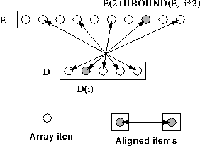

Can reverse an array before alignment:
REAL, DIMENSION(5) :: D
REAL, DIMENSION(10) :: E
!HPF$ ALIGN D(:) WITH E(UBOUND(E)::-2)
This is much the same as the previous example except that D is
aligned in the reverse order. D(5) is aligned with E(10),
D(4) is aligned with E(8), and so on. Effectively this
says:  i, elements E(2+UBOUND(E)-i*2) and
D(i) are local.
i, elements E(2+UBOUND(E)-i*2) and
D(i) are local.
This alignment could also be written:
!HPF$ ALIGN D(i) WITH E(2+UBOUND(E)-i*2)
See Figure 29.

Figure 29: Visualisation of Reverse Strided Alignment
This alignment is suitable for,
D = D + E(10:1:-2) ! All local